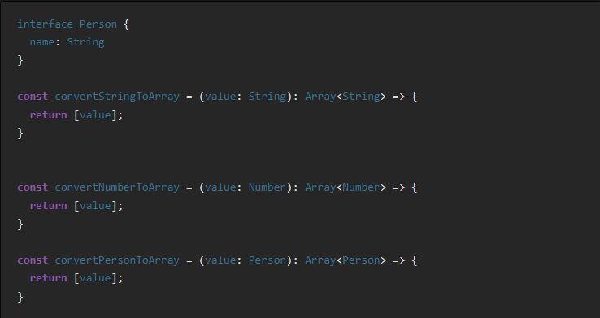

Что такое дженерики в TypeScript?
TypeScript, "надмножество JS", облегчает создание поддерживаемых, понятных и масштабируемых приложений благодаря эффективной возможности проверки типов.
Дженерики играют важную роль в TypeScript, поскольку они позволяют нам писать многократно используемый код, принимающий в качестве аргументов как значения, так и типы.
Дженерики в функциях
Дженерики помогают нам сделать код наиболее пригодным для повторного использования. Давайте попробуем понять, что такое дженерики и зачем они нам нужны, на примере ниже

Фреймворки для тестирования Node: Хорошие, плохие, медленные и ресурсоемкие
Недавно наши интеграционные тесты Jest упали из-за недостатка памяти (ошибка V8 "heap out of memory"). Как оказалось, это не было аномалией, и тесты постоянно аккумулировали на себе столько памяти, что единственный процесс Node.js достиг стандартного предела в 4 ГБ, установленного в V8 для размера кучи (мы явно запускаем их в последовательном порядке, поэтому существует только единственный процесс). У нас около 450 тестов, объединенных в 50 сьютов, которые в основном являются интеграционными: имитированные HTTP-запросы обрабатываются на сервере, который взаимодействует с базой данных Postgres, запущенной в Docker. По этой причине мы используем последовательный запуск, поскольку у нас нет изолированного хранилища для каждого сьюта. После того, как мы обнаружили несколько проблем с Jest, соответствующих нашим диагнозам (выберите понравившийся: ts-jest#1967, jest#10550, jest#11956, jest#12142, jest#7311, jest#7874, jest#11956), одним из действий, которые мы предприняли, было выяснить, сможет ли миграция на альтернативный фреймворк решить наши проблемы.